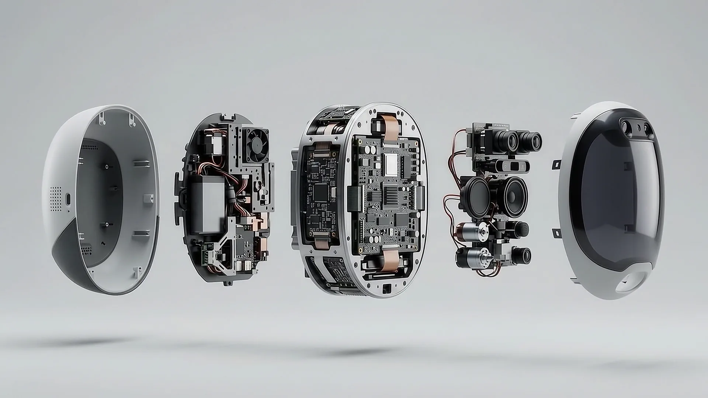

Presentation
AI in Everyday Life and Computer Engineering
A talk in five parts.
Contents
What we’ll cover
-
01
Introduction
- AI in Everyday Life and Computer Engineering
- Agenda
-
02
Understanding AI
- What Is AI?
- A Brief History of AI
-
03
AI in Daily Life
- Everyday Examples
- Benefits and Risks
-
04
AI in Our Field
- AI Tools and Use Cases
- How LLMs Work
- Basic vs. Technical Prompts
- Token Efficiency and Accuracy
-
05
Conclusion
- Using AI Responsibly
- Key Takeaways
Loading frames
Presented by
Thank you.